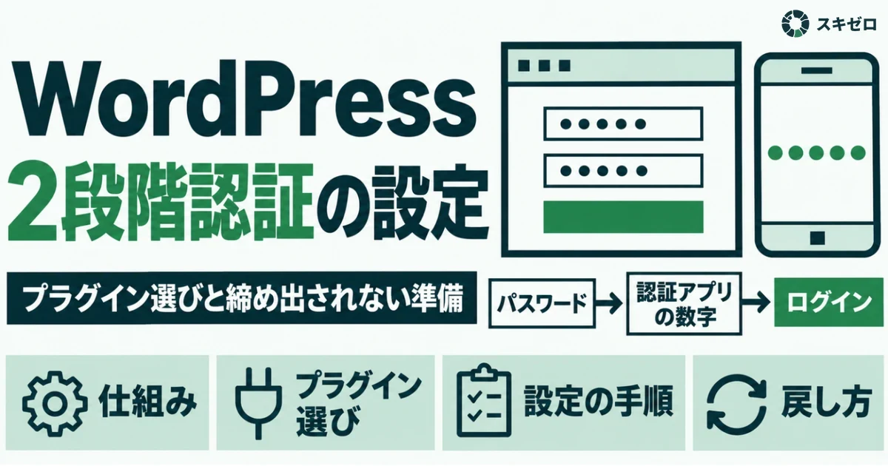
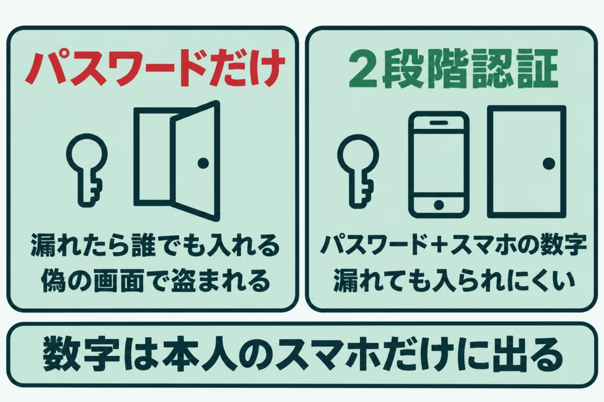
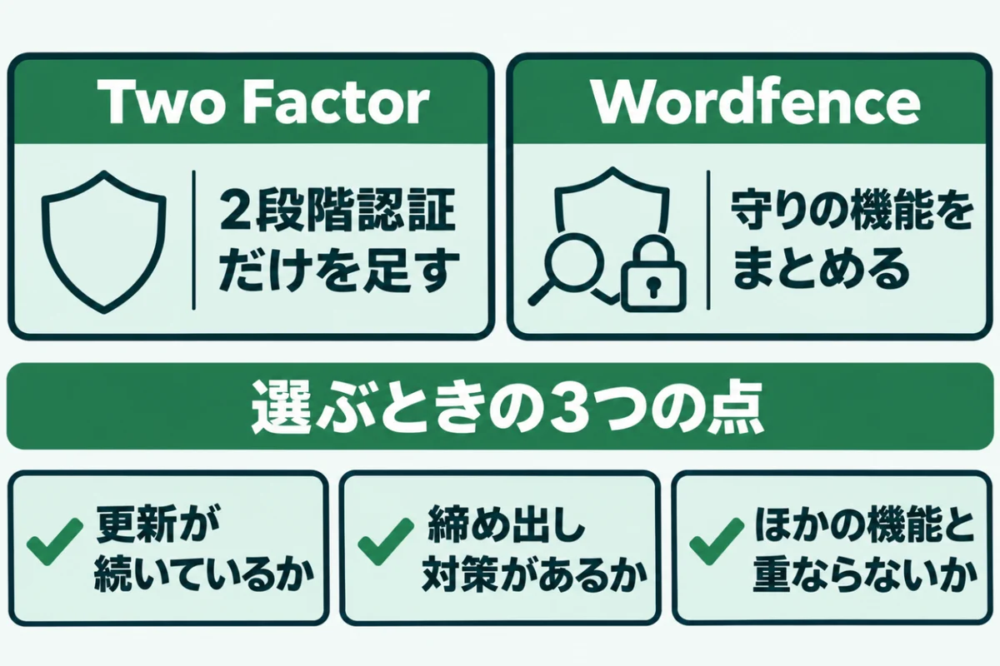
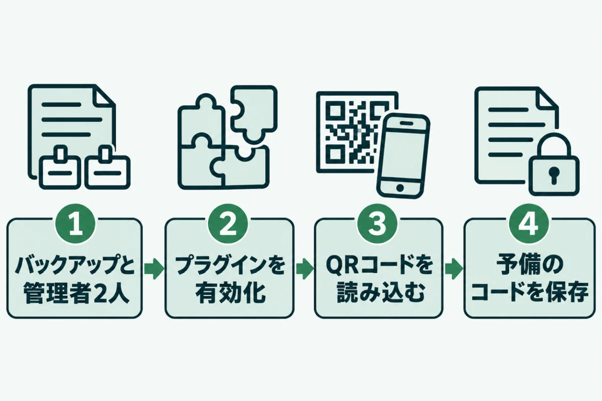
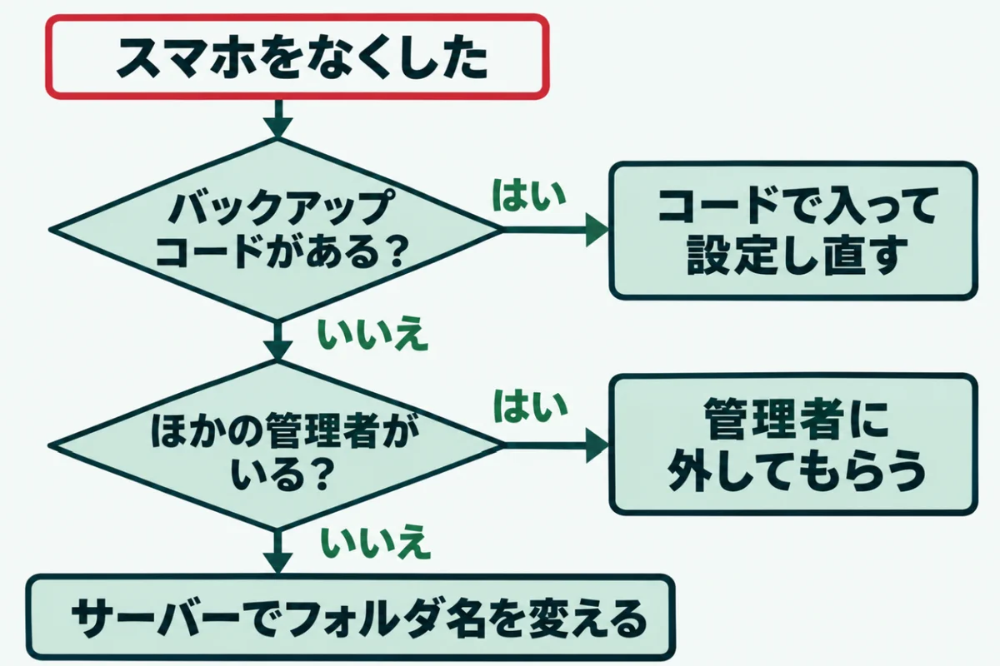
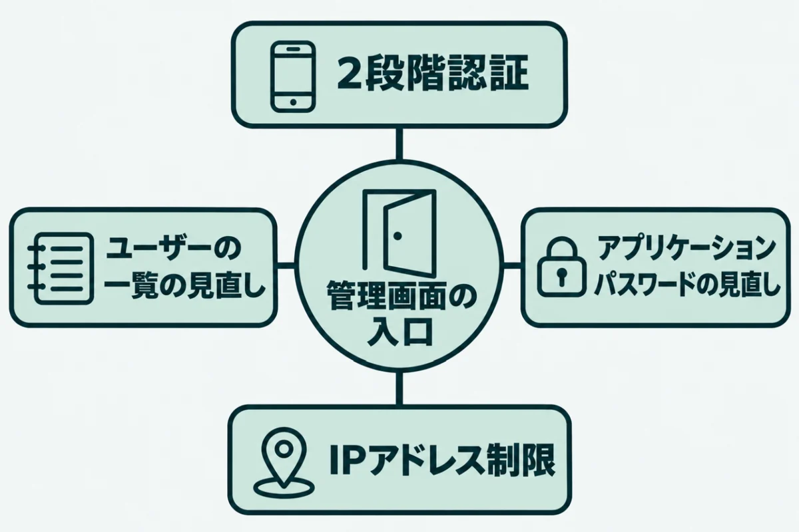

WordPressのログインに2段階認証を設定する方法プラグイン選びと締め出されない準備

「WordPressの管理画面、パスワードだけで本当に大丈夫だろうか」と不安になっていませんか？
パスワードが漏れると、管理画面には誰でも入れてしまいます。2段階認証を足せば、パスワードを知られただけでは入れない形にできるのです。
この記事では、WordPressのログインに2段階認証を設定する方法を順に紹介します。プラグインの選び方と、スマホをなくしたときの備えもまとめました。
もとにしたのは、WordPress公式の手引きや警察庁の統計です。運営者の自社サイトの点検で分かったことも入れています。設定の前に、一度通して読んでおくと安心でしょう。
WordPressの2段階認証とは？パスワードだけのログインとの違い

2段階認証は、パスワードに加えて、手元のスマホに出る数字などを入れてログインする仕組みです。パスワードを知られただけでは入れない形になります。
まずは仕組みと、なぜパスワードだけでは足りないのかを押さえましょう。WordPress本体で設定できるのかも確かめておくと、次の準備で迷いません。先に全体の形をつかんでから、プラグイン選びに進んでください。
知っているものと持っているものを組み合わせる
総務省は、ログインのときに本人を確かめる要素として3つを挙げています。知っているもの、持っているもの、本人の体に関するものの3つです。このうち2つ以上を組み合わせるのが、多要素認証と呼ばれる考え方となります。
WordPressの2段階認証は、知っているパスワードと、持っているスマホを組み合わせる形です。スマホの認証アプリには、30秒ほどで変わる6桁の数字が表示されます。数字は本人のスマホにしか出ないため、パスワードが漏れても入られにくくなるわけです。認証アプリは無料のものが多く、費用もかかりません。
パスワードだけでは防げない入られ方
令和7年に検挙された、他人のIDとパスワードを悪用した不正アクセスは399件でした。そのうち84件は、パスワードの設定や管理の甘さにつけ込んだものです。
次に多かったのは、偽のログイン画面に入力させるフィッシングで、77件ありました。どちらも、パスワードが相手に知られるところから始まります。長く強いパスワードにしても、偽の画面に入力すれば漏れてしまうでしょう。パスワードとは別の確かめ方を足すことが、こうした入られ方への備えです。
WordPress本体には設定の画面がない
WordPressの本体には、2段階認証を設定する画面が入っていません。本体に取り込む話は以前からありましたが、今もプラグインとして別に開発が続いている状態です。
そのため、2段階認証を使うには、対応したプラグインを入れて設定する必要があります。公式の手引きも、ブラウザからのログインには2段階認証を足すよう勧めているのです。サーバー会社の管理画面の設定だけでは、ログインに数字の確認は加わりません。プラグインそのものは、管理画面から数分で入れられます。
WordPressの2段階認証に使うプラグインの選び方

WordPressの2段階認証のプラグインはたくさんありますが、迷ったら2つから選べば十分です。選び方は、2段階認証だけを足すか、守りをまとめるかで決まります。
どちらも無料で使え、認証アプリに出る数字で確かめる方式に対応しているのが共通点です。それぞれの特徴と、選ぶときに見ておきたい点を順に紹介します。すでに守りのプラグインを使っているサイトは、3つ目の点も確かめてください。
2段階認証だけを足すならTwo Factor
Two Factorは、WordPress.orgが公開している2段階認証のプラグインです。有効にしているサイトは10万以上あり、WordPressの開発に関わる人たちが手入れを続けています。
使える方式は、認証アプリ、メールに届く数字、もしもの時のバックアップコードの3つです。ほかの機能を持たず、2段階認証だけを足せるのが長所といえるでしょう。今の版は、WordPress 7.0以上とPHP 7.4以上が前提です。古いサイトは、先に本体の更新から始めてください。
守りの機能をまとめるならWordfence
Wordfenceは、ファイアウォールや不正なファイルの検査に加え、2段階認証も持つプラグインです。有効にしているサイトは500万以上あり、無料版でも2段階認証を使えます。
2段階認証は認証アプリの方式で、XML-RPCという別の入口にも足せる仕組みです。以前のSMSで数字を送る方式は、2026年7月ごろで終わると案内されました。2段階認証だけを切り出した単体版も、2026年8月に配布を終えています。これから入れるならWordfence本体の機能を使ってください。
選ぶときに確かめたい3つの点
1つ目は、更新が続いているかどうかです。プラグインの紹介ページで、最終更新日と対応する版を見ておきましょう。
2つ目は、スマホをなくしたときのバックアップコードがあるかどうかです。3つ目として、すでに使っている守りのプラグインと機能が重ならないかを見ます。同じ働きのプラグインを2つ入れないようにしてください。ログインの画面が二重に変わり、入れなくなる原因になるからです。片付け方は、WordPressの使っていないプラグインは削除すべき？判断の基準と安全な消し方で紹介しました。
WordPressに2段階認証を設定する4つの手順

ここからは、WordPressに2段階認証を設定する手順を、Two Factorを例に紹介します。作業は1人あたり10分ほどで終わるのが目安です。
手順の順番を入れ替えると、設定の途中で締め出される場合があります。準備から確認まで、上から順に進めてください。Wordfenceを使う場合も、大きな流れは同じです。設定は管理者から始め、終わったらほかのユーザーにも広げましょう。
① バックアップを取り、管理者を2人にしておく
設定を始める前に、サーバーの機能などでサイト全体のバックアップを取っておきます。あわせて、管理者の権限を持つユーザーが2人以上いるかを確かめましょう。
管理者が2人いれば、1人が締め出されても、もう1人が外せます。1人で運営しているなら、普段は使わない予備の管理者を作っておくと安心です。予備のユーザー名は推測されにくいものにし、強いパスワードを付けてください。作ったら、そのユーザーにも2段階認証を設定しておくことが大切です。
② プラグインを入れて有効にする
管理画面の「プラグイン」から「新規プラグインを追加」を開き、名前で探してインストールしてください。数十秒ほどで終わります。入れたら「有効化」を押すと、各ユーザーのプロフィールの画面に設定の欄が加わる仕組みです。
この時点では、まだ誰のログインも変わりません。2段階認証は、各ユーザーが自分で有効にする形です。管理者だけでなく、編集者などのユーザーにも設定してもらいましょう。誰が設定を終えたかは、ユーザーの一覧で確かめられます。
③ 認証アプリにQRコードを読み込ませる
スマホに、Google Authenticatorなどの認証アプリを入れます。次に、WordPressの「ユーザー」から「プロフィール」を開いてください。
2段階認証の設定欄で認証アプリの方式を選ぶと、QRコードが出ます。アプリで読み取り、表示された6桁の数字を入れて確かめましょう。ふだん使う方式を認証アプリに決めて、「プロフィールを更新」を押せば完了です。Authyや1Passwordなど、ほかの認証アプリでも同じように使えます。
④ バックアップコードを保存してログインし直す
同じ欄でバックアップコードの方式も有効にし、コードを作ります。コードは1回ずつ使える予備の数字で、スマホが使えないときの入口です。
コードは印刷するか、パスワードの管理アプリに保存しましょう。スマホの中だけに置くと、なくしたときに使えません。最後に、ログアウトしてからログインし直し、数字を求められるかを確かめます。別のブラウザで試すと、うまく動いているかが分かりやすいでしょう。数字を入れて管理画面に戻れたら、設定は終わりです。
WordPressの2段階認証で締め出されないための準備と戻し方

2段階認証でいちばん困るのは、スマホをなくしたり機種を変えたりして、管理画面に入れなくなることです。戻し方を先に知っておけば、慌てずに済みます。
戻し方は、手軽なものから順に3つ知っておくと安心です。1つ目が使えれば、ほかの2つは要りません。上から順に試してください。どの方法も、締め出される前の準備があってこそ使えるものです。
バックアップコードで入る
手元に保存したバックアップコードがあれば、ログインの画面で方式を切り替えて入れます。入れたら、新しいスマホの認証アプリで、もう一度QRコードを読み込みましょう。
使ったコードは、二度と使えません。残りが少なくなったら、コードを作り直して保存し直してください。機種を変えるときは、古いスマホがあるうちに読み込み直すのが確実です。認証アプリによっては、新しい機種へ移す機能もあります。移したあとは、ログインし直して数字が通るかを確かめてください。
別の管理者に外してもらう
コードがないときは、ほかの管理者に頼むのが近道です。Two Factorでは、管理者がその人のユーザー編集の画面を開けば外せます。
外したあとは、本人がもう一度ログインし、新しいスマホで設定し直してください。サーバーでコマンドが使える環境なら、WP-CLIという道具で外す方法も用意されています。予備の管理者を作っておく意味は、こうした場面で分かるはずです。頼む相手がいない場合に備えて、次の方法も知っておきましょう。
どちらもないときはサーバーで止める
管理者が自分1人で、コードもない場合は、サーバー側で2段階認証のプラグインを止めます。FTPやサーバーのファイル管理で、プラグインのフォルダの名前を変える方法です。
名前を変えるとプラグインが止まり、パスワードだけで入れるようになります。入れたらすぐにフォルダ名を戻し、設定し直してください。止めている間は、2段階認証のない状態に戻っているからです。フォルダは、wp-contentの中のpluginsにあります。作業の前に元の名前を控えておけば、戻すときに迷いません。
WordPressの2段階認証だけでは足りないところ

2段階認証は、管理画面へのログインを守る仕組みです。ただし、WordPressにはブラウザからのログイン以外にも入口があります。ほかの入口と組み合わせて守ることが大切です。
見落としやすいのは、アプリケーションパスワードと、サーバー側の守りの2つでしょう。どちらも、2段階認証を設定したその日に、あわせて見直しておきたいところです。順に見ていきましょう。
アプリケーションパスワードは別の入口
アプリケーションパスワードは、外部のアプリとやりとりするための専用のパスワードです。WordPress 5.6から本体に入り、各ユーザーのプロフィールの画面で作れます。
これで管理画面には入れませんが、記事の投稿などはできる場合があるのです。Two Factorでは、2段階認証を設定しても、このパスワードはそのまま使えます。運営者の自社サイトの点検でも、使わなくなったアプリケーションパスワードが残っていました。使っていないものは、プロフィールの画面で取り消してください。
サーバーの守りとユーザーの見直しを組み合わせる
エックスサーバーでは、2026年6月に管理画面へ入れるIPアドレスを絞る機能が加わりました。会社の回線だけに絞れば、外からはログインの画面に届きません。
あわせて、ユーザーの一覧も定期的に見直しましょう。運営者の自社サイトでは、心当たりのない編集者のアカウントが2つ見つかっています。知らないユーザーは2段階認証では見つかりません。入られたかもしれないときは、すぐに動く必要があります。手順は、WordPressの管理画面に不正ログインされたときの対処｜すぐやる3つと再発防止です。
URLを入れるだけで、ログイン名の見え方やWordPressの版など8項目を無料で判定します。登録はいりません。
無料で診断するWordPressの2段階認証に関するよくある質問
2段階認証を設定すると、ログインのたびに手間が増えますか？
ログインのたびに、スマホのアプリを開いて6桁の数字を入れる手間が増えます。かかる時間は10秒ほどです。プラグインによっては、同じ端末なら一定の期間は数字を省ける設定もあります。毎日ログインする人でも、慣れればほとんど気にならない程度でしょう。管理画面に入る回数が多い人ほど、入られる心配が減る効果は大きくなります。数字は30秒ほどで変わるので、切り替わる直前なら次の数字を待ちましょう。
メールで数字を受け取る方式でもいいですか？
使えますが、ふだん使う方式には認証アプリをおすすめします。メールの方式は、メールのアカウントが乗っ取られると、数字も相手に届いてしまうのが弱点です。サーバーのメールの送信が止まっていると、数字が届かず入れなくなることもあります。メールの方式は、認証アプリの予備として有効にしておく使い方が向いているでしょう。バックアップコードとあわせて用意しておくと、入れなくなる心配はさらに小さくなります。
編集者や投稿者のユーザーにも設定したほうがいいですか？
記事を公開できる権限のある人には、設定してもらうのが安全です。編集者のアカウントが乗っ取られると、偽の記事や悪いリンクを載せられてしまいます。外部のライターなど、たまにしかログインしない人も対象に含めましょう。パスワードの使い回しが、起きやすいからです。使わなくなったユーザーは、設定するより先に削除しておいてください。権限の一覧を見て、誰に設定してもらうかを先に決めると進めやすくなります。
2段階認証を入れれば、ほかの対策はしなくていいですか？
いいえ、2段階認証が守るのはログインの入口だけです。古いプラグインの弱点を突かれると、ログインしなくてもサイトを書き換えられる場合があります。本体やプラグインの更新、PHPの版の確認、バックアップは別に続けてください。何年も更新していないサイトなら、更新の順番が大切になります。手順は、WordPressを何年も更新していないときの安全な更新手順｜一気に上げずに段階的にです。
制作会社に任せているサイトでも、自分で設定できますか？
管理者の権限があれば、自分でプラグインを入れて設定できます。ただし、制作会社が保守でログインしている場合は、先に相談してから入れてください。制作会社の担当者も2段階認証が必要になり、作業の段取りが変わるからです。誰が管理者のアカウントを持っているかも、この機会に一覧で確かめておきましょう。今のサイトの状態が分からないときは、スキゼロの無料簡易診断が使えます。ログイン名の見え方など8項目を、外から無料で確かめられる仕組みです。
まとめ
WordPressの本体には2段階認証の設定がないため、プラグインで足します。候補は、2段階認証だけを足すTwo Factorと、守りをまとめるWordfenceです。設定の前に、バックアップを取り、管理者を2人にしておきましょう。
認証アプリで設定したら、バックアップコードをスマホの外に保存してください。アプリケーションパスワードやユーザーの一覧も見直しましょう。2段階認証とほかの守りを組み合わせることが大切です。
まずは、今の状態を知るところから。
URLを入れるだけで、数十秒で判定が出ます。登録はいりません。